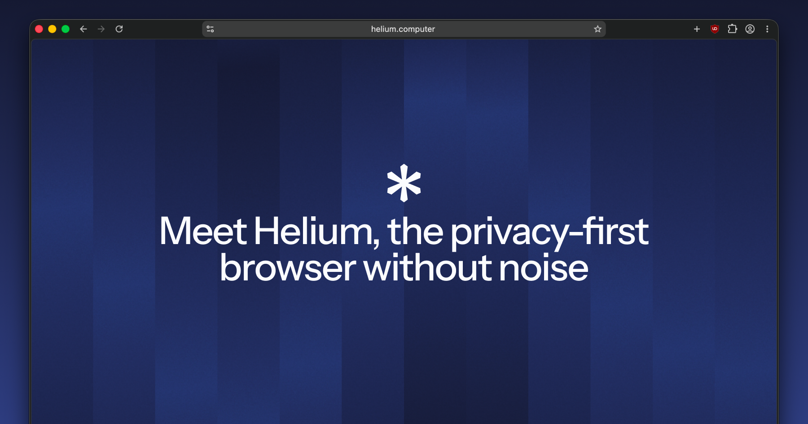
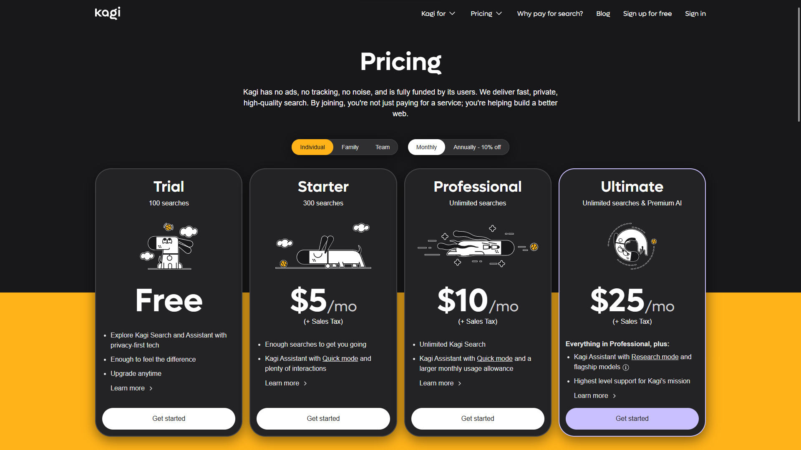
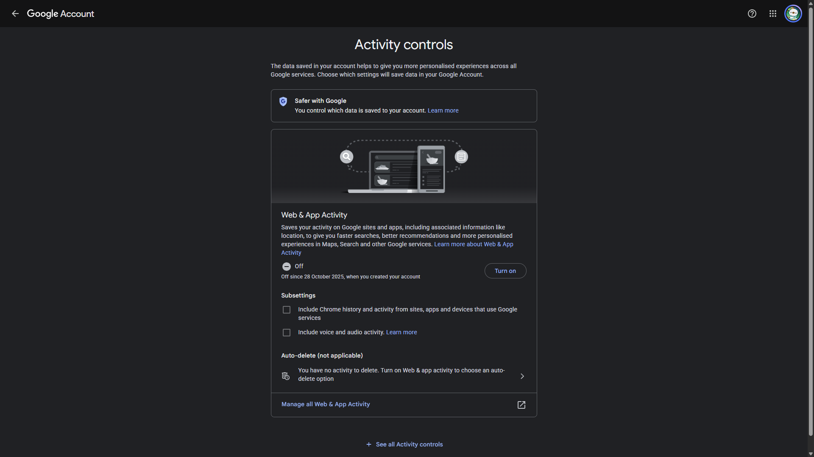

today i wanna yap about something that's honestly been on my mind for years at this point: passwords, privacy, and the genuinely unhinged amount of stuff about you that's just sitting out there on the internet right now, findable by pretty much anyone who bothers to look.
googling myself
a few years ago, i got curious about what was actually out there about me. not in the way where you type your name into google, look at the first couple of results, see nothing particularly interesting, and close the tab again. i mean i actually wanted to dig through it properly. my full name first. then every online nickname and alias i'd ever used, going back years, some of which i genuinely hadn't touched since i was like fourteen. i just kept typing variations in and watching what crawled out of the search results.
and it was a lot. way more than i expected going in. old forum profiles i'd completely forgotten existed, accounts from a phase i'd rather not remember, some ancient social media profiles with a bio that made me want to sink into the floor, and worse, actual personal info just sitting there in plain sight on data broker sites i'd never even heard of.
i started bookmarking every single page. by the end i think i had more than a hundred tabs bookmarked, which, in hindsight, is a genuinely unhinged number of digital footprints for one person to have left behind without ever really noticing.
i went through that list one by one over what ended up being multiple days, and for each one i didn't just close the tab and move on, i actually logged in wherever i still could, dug through account settings, and deleted what i found. properly deleted, not deactivated. some of them had deeply buried delete options, support tickets i had to file just to get an actual human to remove my data, one site that made me wait weeks and confirm two separate times before it would let me go. but i got through all of it.
i realized that all that old stuff doesn't just disappear because i stopped caring about it. those accounts were still there. those profiles were still there. some of them had been sitting untouched for years, completely outside of my awareness, and i only found them because i actually went looking for them.
how people actually get hacked
most account breaches aren't someone sitting there trying to guess your password character by character. usually, the password has already been exposed somewhere else. password reuse is the big one.
say you made an account on some random forum when you were sixteen, used the same password you'd used everywhere else, and then forgot about the account. a few years later, that forum gets breached. depending on how the site stored passwords, the attackers might get password hashes rather than the actual passwords. a hash isn't the same thing as a plaintext password, but weak passwords can still sometimes be recovered from them, especially if the site didn't store them properly in the first place.
and even if the password itself isn't immediately recoverable, the leaked email and password combination can still be useful somewhere else. and this is where credential stuffing comes in: attackers take credentials from an old breach and automatically try them on other services. if you reused the same password on another account, they don't need to break into that service. they can just try the credentials they already have.
phishing is different. instead of using credentials from an old breach, the attacker tries to get you to hand them over in the first place, usually through a fake login page, email, or message. both can lead to the same result, but they work in completely different ways.
and old breaches don't really stop mattering just because they're old. if you used the same password for years, something that leaked in 2018 could still work today. even if you've changed it since then, old email addresses, usernames, phone numbers, and other account information can still be combined with newer data from other breaches. that's how something that leaked years ago can still become useful much later.
that's basically it. there's no complicated trick behind it. if the credentials are already leaked, trying them elsewhere is mostly a matter of automation and volume.
where it all ends up
and that leaked data doesn't just sit in one place either. it gets copied, bundled into bigger dumps, traded, sold, and sometimes given away for free on forums that are honestly not even that hard to find if you know roughly where to look. one breach can end up being copied and redistributed over and over again, which means the same piece of data can keep circulating long after the original breach happened.
there's a genuine economy built around this. different kinds of data have different values, and complete sets of information can be more useful than individual pieces on their own. login credentials can be sold in bulk, payment information can be packaged separately, and combinations of names, email addresses, phone numbers and other personal information can be turned into detailed profiles.
and the raw material for all of it is just us. our accounts, our reused passwords, our email addresses, our old usernames, our forgotten sign-ups from a decade ago. most of the time, none of these things seem particularly valuable on their own. it's what happens when they're collected, combined and passed around that makes them useful.
password managers, actually explained
i think most people who don't use a password manager assume it's just a fancy notes app for passwords, which, fair, from the outside it kind of looks like that. but the actual value is so simple: it lets you have a completely different, completely random password for every single account you own, without having to remember any of them except one.
here's why that one thing matters so much:
that's genuinely the entire pitch. one leak stays exactly that, one leak, instead of a skeleton key to your whole digital life.
a couple of things actually worth caring about when picking one though. open source matters a lot here, because it means the code supposedly protecting your most sensitive information isn't just a black box you're trusting blindly. security researchers and randos on github can actually go look at what it's doing and call it out if something's wrong. end to end encryption matters just as much. with a properly designed setup, your vault gets encrypted locally on your device before it's ever sent anywhere, so the company running the service doesn't have access to the key needed to read your passwords. not if they wanted to, and not just because someone demanded access to their servers.
okay but it's bigger than just passwords
this is the part i actually think matters more long term, and it's the part almost nobody talks about: deleting an app off your phone does not delete you off the internet. it deletes an icon. your account, your posts, your messages, your uploaded photos, all of it can still be sitting on a server somewhere, still being processed, still potentially being shared with third parties, and still there waiting for the next breach to leak it right back out into the world.
if you actually want to be gone from something, you have to find the account deletion option specifically, which companies love to bury three menus deep exactly so you won't bother, and actually go through with it.
and it's not just the obvious stuff either. it's the online shop you bought one thing 6 years ago and never touched again. the forum you joined for one specific question and forgot existed a week later. the free trial you signed up for with your real email because you didn't think it through at the time. every single one of those is a login sitting somewhere with your information attached to it, and every single one is another account that could eventually be involved in a breach, whether or not you ever think about it again.
when i do a cleanup, i basically work backwards. i start with my email inbox and search for old sign-up emails, account confirmations, receipts, password reset emails, newsletters, anything that tells me i once made an account somewhere. then i check my password manager for accounts i haven't touched in years. i go through it one by one, and for anything i genuinely don't need anymore, i log in and delete the account rather than just leaving it abandoned. if i can't find a deletion option, i look through the site's privacy or support pages and figure out what the actual process is. once it's deleted, i remove the saved login from my password manager too.
after doing that, i also started keeping track of every site where i actually have an account by bookmarking it. that way, whenever i make a new account, i can add it to the list, and long term i always have some kind of overview of where i've actually given my information to. if i ever want to do another cleanup, i don't have to remember which random sites i've signed up for over the years. i can just go through the bookmarks and see who's still holding my data.
two-factor authentication
if you're not using two-factor authentication everywhere it's offered, go turn it on for something important after you finish reading this.
2fa means logging in needs your password plus a second, separate proof that it's actually you, usually a rotating code from an authenticator app or a code sent to your phone. the problem is that a lot of services still default to sending that code as a text message, which feels secure but isn't the strongest option. sms depends on your phone number and mobile carrier, which means attacks like sim swapping can sometimes let someone take control of your number and receive those codes themselves.
a proper authenticator app is better because the code is generated locally on your device using a shared secret, so there's no sms message being sent for an attacker to intercept. i'd point you toward something open source if you want to actually be able to inspect what it's doing. aegis on android is solid and encrypts its backups, and ente auth is another option if you want cross-platform sync.
the other thing people forget about 2fa is recovery. before turning it on, make sure you know how the service lets you get back into the account if you lose your phone. when a service gives you backup codes, i personally just put them straight into the notes section of my password manager. it's ridiculously convenient, keeps everything in one place, and means i don't have to worry about losing some random piece of paper with a bunch of codes on it. if you're using an authenticator app, make sure you also have whatever backup or recovery option it provides set up properly.
vpns, and what they actually do
vpns get sold as this magic anonymity cloak, and that's done more harm than good, because it sets people up to misunderstand what they're actually paying for.
what a vpn actually does: it routes your internet traffic through an encrypted tunnel to a server run by the vpn provider, which hides your traffic and real ip address from your internet provider and anyone else on the local network you're connected to, like public wifi at a coffee shop. that's genuinely useful. what it doesn't do: make you anonymous online, protect you from phishing, stop malware, or hide anything from the websites you're logged into. google still knows it's you the second you log into your account, vpn or not.
the vpn provider isn't magically blind to your traffic either. your connection to the vpn server is encrypted, but once your traffic leaves that server and goes out onto the internet, the vpn provider is the one operating that exit point. with https, they generally can't just read the contents of the websites you're visiting, but they can still potentially see things like which servers you're connecting to, when you're connecting, and how much data you're sending. so a vpn doesn't make the trust problem disappear, it just changes who you're trusting.
a vpn doesn't remove the need to trust someone with your traffic, it just moves a lot of that trust from your isp to the vpn provider instead. which means the provider you pick actually matters a lot. free vpns especially are worth being skeptical of. running a vpn service costs real money in server infrastructure, so if it's completely free, you should at least ask how they're making that money. some free vpn services have been caught logging or monetizing user data, which is pretty much the opposite of what you'd expect from a privacy service.
so for me, a vpn makes the most sense as a tool for a specific job rather than some universal privacy button. it can stop your isp from seeing which sites you're connecting to, hide your home ip address from the websites you visit, and give you a layer of protection on networks you don't fully trust. it doesn't stop websites from identifying you through your accounts, cookies or other tracking methods, and it doesn't somehow make everything you do online anonymous.
i'd point toward providers that are transparent about how they operate, have had their systems or infrastructure independently audited, and don't require much identifying information to sign up. mullvad's a solid example: no email required, and they even let you pay with cash by mail if you want to go that far. proton vpn is another decent option if you're already somewhere in that ecosystem, and its apps are open source so the code can actually be inspected.
browser and search engine
this one's more personal preference than the others, but worth mentioning in detail since it's such a daily-use thing, and honestly the pair i've landed on is the software i'm probably most enthusiastic about in this entire post.
helium is my main browser. it's built on top of ungoogled-chromium, so you get all the speed and site compatibility of chromium underneath, but with a lot of google's web-service dependencies and telemetry stripped out. ublock origin is built into helium rather than something you have to install separately, which makes ad and tracker blocking work out of the box. it also has built-in fingerprinting protection that can modify or limit some of the signals sites use to identify your browser, including things like canvas, audio and hardware-related information. there's no built-in password manager or account sync, which sounds like a downside until you realize that's intentional, less stuff to sync, less data being stored somewhere else, and less surface area overall. every single component is open source, all of it inspectable on github if you want to actually verify any of what i just said instead of taking my word for it.

kagi is my search engine, and it flips the entire economic model search usually runs on. you pay for it directly instead of paying with your data, which sounds small but changes the incentives underneath. no ads, no cross-site tracking, and they say they only collect what's necessary to actually run the service. because they're not trying to build an advertising business around your searches, the results are just... better, genuinely less spam and affiliate garbage cluttering the first page. you can also permanently boost or block specific domains from your own results, which is oddly satisfying, and their "lenses" let you narrow a search down to things like forums, programming sites, or other specific parts of the web depending on what you're actually looking for.

the actual point though: your browser and search engine sit right at the beginning of a huge amount of what you do online, so they're a genuinely high-leverage place to make a privacy-conscious choice. most default browsers and the biggest search engines are built around some combination of advertising, tracking and data collection. picking tools that don't depend on that model doesn't magically make you private, but it does mean the company providing the tool has a much weaker financial incentive to turn your behavior into a profile.
the two extensions i install everywhere
and regardless of which browser you're actually using, there are two extensions i consider basically essential if the browser doesn't already have this functionality built in: ublock origin and i still don't care about cookies.
ublock origin is the obvious one. it's a general-purpose content blocker that can block ads, trackers, malicious domains, annoying scripts and a whole bunch of other stuff before the browser even loads it. the difference is pretty significant: instead of visiting a website and then letting every third-party script on that page do whatever it wants, ublock can stop a lot of those requests from happening in the first place. for me, it's one of those things where using the internet without it genuinely feels broken.
ads are annoying, but the bigger thing is everything happening behind the ads: trackers, analytics, third-party scripts and all the little requests a page makes to other servers while you're just trying to read an article. blocking those requests means less third-party stuff gets loaded in the first place, which means fewer companies getting information about what you're doing.
there's also a much smaller privacy habit i've picked up because of this: clean tracking parameters out of urls before i send them to someone else. you'll see things like utm_source, utm_campaign and other random-looking parameters attached to links, especially when they come from newsletters, social media or advertising campaigns. they aren't always tracking parameters, and you shouldn't blindly delete every query parameter because some of them are actually required for the link to work, but when you recognize something that's clearly just campaign or tracking information, there's really no reason to pass it along. if i'm sending someone a link, i want to send them the actual destination, not all the extra baggage attached to how i happened to find it.
ublock origin can actually remove some of these parameters automatically as part of its filtering system. its removeparam functionality can strip specific parameters or whole groups of parameters from network requests, including patterns such as utm_*. it's useful, but it's not something i'd rely on blindly for every url, and the functionality is more limited in the mv3 version. that's another small example of why the underlying extension architecture actually matters when you're talking about privacy tools.
the other one is the extension called "i still don't care about cookies". it deals with those endless cookie consent banners that have somehow become part of using the web in europe. instead of making you click through the same six toggles on every single website, it can automatically handle a lot of those consent dialogs for you and get the banner out of the way. it doesn't magically make cookies disappear, and it isn't a replacement for an actual content blocker, but it removes an enormous amount of pointless friction from browsing.
there is one annoying complication with ublock origin depending on which browser you use: chrome and other chromium-based browsers have been moving away from an older extension system called manifest v2, usually shortened to mv2, toward manifest v3, or mv3.
the important bit here is that mv2 and mv3 aren't just two versions of the same thing with a different number. they change what browser extensions are allowed to do and how some of their apis work. one of the biggest changes for content blockers is how they can handle network requests. ublock origin relies heavily on being able to inspect and block requests dynamically, which is one of the reasons it's so powerful. mv3 replaces some of that flexibility with a more restricted system based around declarative rules, where the extension has to tell the browser in advance what kinds of requests it wants blocked.
that doesn't mean mv3 makes ad blocking impossible, but it does put real limitations on what a blocker can do. that's why ublock origin isn't supported in the same form on browsers that have dropped mv2 support. if you're stuck using a browser like regular google chrome, ublock origin lite is the mv3-compatible version and is still much better than having no blocker at all. it just isn't the same thing as full ublock origin, because the underlying extension apis don't give it the same level of control.
this is one of those cases where the software underneath your browser actually matters. the browser's extension architecture determines what that blocker is technically capable of doing, and that's why two browsers can both have an extension called an ad blocker while giving it very different levels of control.
for me, that's basically the minimum layer i want sitting between me and the modern web. because there's no reason to let every random website load every tracker, ad network, analytics script and consent popup it wants to throw at you by default.
metadata
i think this is honestly the most underrated topic in this entire post: metadata. people fixate on the content of what they share, the actual photo, the actual message, and almost completely ignore the data describing that data, which can reveal a surprising amount about you.
take a photo on your phone and post it somewhere. depending on your camera settings, that image file can have exif data attached to it, including the exact location where it was taken, the specific phone model, the date and time, various camera settings, and even more. it's surprisingly easy to reveal where a photo was taken without ever actually saying where you are. some platforms and services strip or hide certain metadata when you upload photos, some don't, and the exact behavior varies, so i wouldn't assume anything has been removed unless you actually know how that service handles it.
for example, discord strips exif data from uploaded images, so someone downloading an image you posted there shouldn't get the original gps coordinates or camera information from the file. that doesn't necessarily mean every possible piece of metadata is removed, though, and the behavior can also differ depending on the type of media you're uploading. twitter, meanwhile, says it temporarily retains exif data while processing an uploaded photo and uses it for things like location suggestions and analytics, but that exif data isn't made available to people viewing the photo. instagram also processes uploaded images and can remove or transform metadata during the upload process, but the important point is that you shouldn't build your own privacy model around assuming a platform will always strip everything for you.
and it goes way beyond photos. even when a message itself is properly end to end encrypted, so nobody can read the content, the metadata around it is a completely different category of information. who you talked to, when you were active, and other patterns can potentially reveal things about your social life without anyone ever seeing the actual messages. this is one of the areas where signal takes a particularly different approach: signal is designed to minimize the metadata it has access to in the first place. signal has published its responses to legal requests before, and the gist of it is roughly this:
the only thing we can hand over is the date an account was created and the last time it connected to the service. we don't have access to contacts, groups, messages, or call logs, so there's simply nothing further we're able to share.
whatsapp is still end to end encrypted for personal messages and calls, so the actual content isn't just sitting there for meta to read. but that doesn't mean the two services have identical privacy properties. whatsapp's privacy model involves collecting other information needed to operate the service, and its ecosystem also includes things like account information, device information and activity in features such as channels and status. the important distinction is that encryption protects the content of a conversation, while a service's overall data collection determines what can still be learned around that conversation.
the browser itself is a metadata source most people never think about, tying back to the browser point from earlier. mainstream browsers, chrome especially, collect a stream of telemetry about your usage, which sites you visit, how often, crash reports, feature usage, sync data, sent straight back to the company that made it. that's metadata about your behavior, not that different in spirit from the messaging metadata we just talked about. it's part of why i use something like helium, since it strips that telemetry pipeline out entirely rather than just promising to handle it responsibly. their own faq is pretty direct about it, when asked whether helium collects any personal data:
no. helium makes zero web requests on first launch, has no analytics, and no first-party ads. all types of requests to helium services must be acknowledged and approved by you. helium services are anonymous and don't collect any personal data.
my actual philosophy on all this
all of this ties back into something bigger for me, basically a whole way of thinking about how i want to exist online, and probably offline too if i'm being real. quality over quantity, pretty much always. i'd genuinely rather have three accounts i actually use, actually maintain, and actually trust, than thirty i signed up for once and immediately forgot about.
that's kind of the whole thing actually: fewer accounts means you can actually take care of the ones you keep. you know what data they have, you notice when something changes, you notice if something feels off. spread yourself across fifty different platforms and you have no real idea what's out there about you anymore, no way to meaningfully audit any of it, no actual control. reducing the number is the control.
same logic applies to social media specifically. i keep the number of platforms i'm actually on deliberately small, not because i'm against social media as a concept, but because every additional platform is another company with a copy of my data, another login that can leak, another thing i have to remember exists and actually maintain instead of just abandoning and hoping for the best.
ethical first, minimalist, private, secure, minimal footprint, these aren't really separate values for me, they kind of all fold into the same thing. wanting to actually understand and control what's mine instead of just handing it out passively to whoever asks.
i'm not perfectly consistent about any of this either. there's a few platforms in my life that flat out contradict what i just wrote, and i know it, and i keep using them anyway. usually it's some mix of comfort and the fact that there genuinely isn't a good alternative that covers what i actually need.
discord for example. i'm on it every single day, because pretty much everyone i know is on it too, it's basically the default hangout spot for online friend groups at this point. and i've been unhappy with the direction discord's been heading in for years now. but i can't just cut it out of my life. it's the actual infrastructure for basically every social connection i have online. there's no realistic alternative my friends would actually switch to with me.
then there's twitter. and yes, i call it twitter and i'm going to keep calling it twitter. i don't think i need to explain much here, it should be pretty obvious i don't align, not even a little, with the values or practices that platform and elon musk represent at this point. since the acquisition it's gutted a huge chunk of its trust and safety team, significantly weakened or changed a number of its policies around election and misinformation, and reinstated a wave of accounts that were previously banned for genuinely awful stuff. multiple independent studies since then have found measurable increases in hate speech on the platform, whatever the company's own numbers claim. it's not a place i'm proud to have an account on. i keep it anyway because it's still where a chunk of the communities and conversations i care about actually happen, and i haven't found anywhere else that's fully replaced it yet.
i actually know there's a values-aligned alternative sitting right there too, bluesky. politically, ethically, structurally, it lines up with basically everything i said i care about way better than twitter ever will, decentralized, open protocol. i gave it a real shot too. i went through a proper social media detox phase at one point where i deleted basically every account and app i had except bluesky, and discord if we're counting that. weeks, genuinely months, exclusively on bluesky.
and it was just... boring. not because the platform itself is bad, technically and ethically i still think it's the better option by a wide margin, but i had zero mutuals there, nobody i actually knew had made the jump with me, and there's no algorithm pushing content at you the way twitter's or instagram's does. which, conceptually, i think is actually a really cool, healthy design choice, you're not being fed an engagement-optimized slot machine designed to keep you scrolling. but in practice it just meant my feed was quiet and my time there felt kind of empty. i drifted back to twitter within a couple months, which, i'm aware, is exactly the kind of thing i'm trying to be honest about in this whole section.
honestly though, if i'm ranking my inconsistencies, google is probably the biggest one, maybe the biggest contradiction in this entire post. i am deep in the google ecosystem. google workspace for basically everything, a pixel phone, pixel buds, the whole set. i genuinely like the products, they're well built, they integrate with each other cleanly, they just work, and after everything i've written in this post about ethics-first, minimal footprint, privacy-first software, google is arguably one of the worst possible matches for that philosophy i could have picked. i know that.
i've actually tried getting off it too, more than once. gave the proton ecosystem a real shot a few different times, weeks at a stretch, once almost a couple months. proton mail, proton drive, proton pass, the whole suite. and every single time, i ended up back on google. not because proton is bad, it's genuinely solid, properly encrypted, built by people who clearly care about privacy as a first principle instead of an afterthought. i just missed the polish, the integration, the fact that everything in google's ecosystem talks to everything else without me having to think about it.
for the sake of actually educating on this instead of just confessing to it: google's own position is that they don't "sell" your personal data, and taken literally, that's technically true, they don't hand a third party a spreadsheet of your info in exchange for a check. what actually happens is arguably functionally similar though. a big part of google's advertising business involves real-time bidding and other forms of programmatic advertising. depending on the ad setup, consent and privacy settings, an ad request can result in information being sent to third-party bidders so they can decide whether and how much to bid. those bid requests can contain different kinds of signals about the impression and user, depending on the circumstances, and google explicitly documents cases where bidders can receive things such as site information, location-related information, identifiers and device information. in some situations, bidders can also use bid request data to build profiles for interest-based advertising and remarketing.
so no, it's not literally google taking a database containing your name, email and entire browsing history and handing copies of it to advertisers. that's not really how the system works. but there is still a massive advertising ecosystem built around exchanging signals about users and ad impressions, and google is one of the biggest companies sitting in the middle of it. whether you personally find the distinction between "selling your data" and "using your data as part of an advertising ecosystem" meaningful is probably going to come down to semantics at some point.
so yeah, i use it anyway. here's the reasoning, as much as i can defend it:
- it's still a different kind of exposure than handing my data to some random, unaccountable data broker nobody's ever heard of. google is at least large and scrutinized enough by regulators, journalists, and lawsuits that there's some level of accountability, however imperfect.
- it ties back into the same quality over quantity logic from earlier: one company i understand reasonably well and can actually manage settings for, instead of data scattered across a dozen smaller, less transparent services i'd have even less visibility into.
- it's also just genuinely convenient, and i've made peace with the fact that convenience is part of the compromise i talked about, not something to pretend doesn't factor in.
none of that is me saying just shrug and accept everything though. even within ecosystems i'm not fully aligned with, i think it actually matters to grab whatever control is still on the table. stop clicking "accept all" on cookie banners just because it's the fastest button to make the popup disappear, actually click through to the settings and reject what you can. go into your google account's privacy settings and turn off ad personalization, turn off web and app activity, turn on auto-delete for your activity history instead of letting it pile up indefinitely. same goes for literally any platform you're still on for whatever reason, discord, twitter, instagram, whatever it is, there's almost always a privacy settings page buried somewhere with toggles most people never touch. it's not a perfect fix, it doesn't undo the underlying business model, but it's a real, meaningful reduction in exposure, and it costs you about ten minutes.

that's basically what i mean by inconsistency though, not pretending any of that doesn't exist, just being honest about why it does. i think compromise is actually essential to this whole philosophy, not a failure of it. the goal was never some pure, perfectly locked-down existence with zero contradictions, i don't think that's realistic or even particularly healthy to chase. it's finding a middle ground you're still genuinely happy with, one that covers the needs that actually matter to you, but one that still reflects your values as much as it reasonably can and still gives you most of the benefits i've been talking about this whole post. basically just peace of mind, not purity.
anyway
that's everything i wanted to get into today. if any of it actually gets you to turn on 2fa somewhere or finally clean up an old account you forgot existed, that's honestly more than i expected, and if you want a couple of small, open-source tools for exactly this kind of thing, i put together a password generator and a metadata remover a few days ago, both linked on the homepage.
back to top